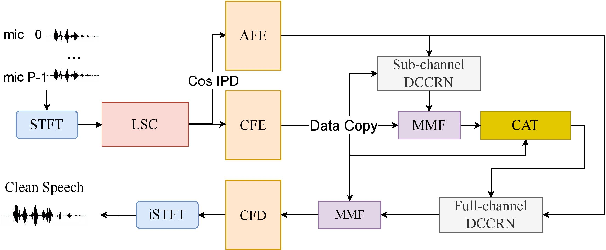
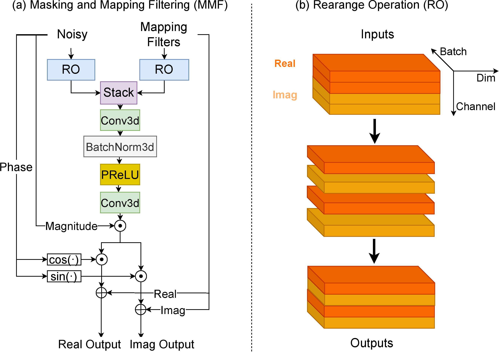
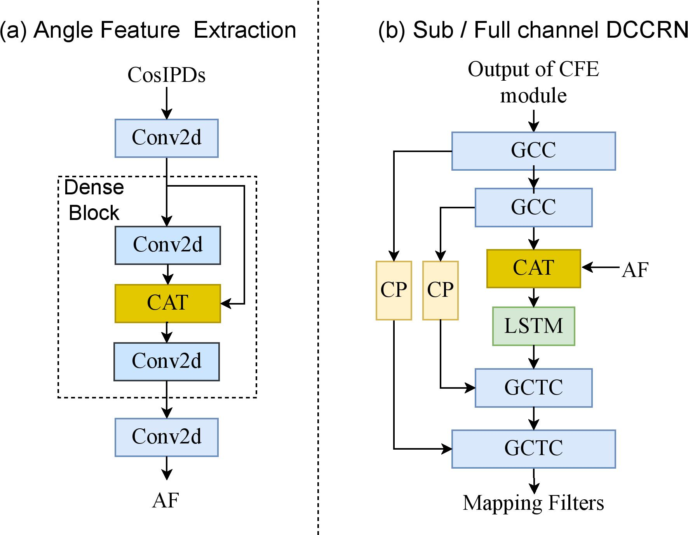

Spatial-DCCRN: DCCRN Equipped with Frame-level Angle Feature and Hybrid Filtering for Multi-channel Speech Enhancement
0. Contents
- Abstract
- Demos -- L3DAS22 Challenge dataset
- Demos -- ConferencingSpeech2021 Challenge dataset (real-recording)
- Demos -- ConferencingSpeech2021 Challenge dataset (semi-real-playback)
- Demos -- ConferencingSpeech2021 Challenge dataset (semi-real-realspk)
1. Abstract
Recently, multi-channel speech enhancement has drawn much interest due to the use of spatial information to distinguish target speech from interference signal. To make full use of spatial information and the mask estimated by neural network, we propose a multi-channel denoising neural network -- Spatial DCCRN. Firstly, we extend our previous S-DCCRN to multi-channel scenario, aiming at performing cascaded sub-channel and full-channel processing strategy, which can model different channels separately. Moreover, instead of only adopting multi-channel spectrum or concatenating first-channel's magnitude and IPD as the model's inputs, we apply an angle feature extraction module (AFE) to extract frame-level angle feature embeddings, which can help the model to apparently perceive spatial information. Finally, since the phenomenon of residual noise will be more serious when the noise and speech exist in the same time frequency (TF) bin, we particularly design a masking and mapping filtering method to substitute the traditional filter-and-sum operation, with the purpose of cascading coarsely denoising, dereverberation and suppressing residual noise. The proposed model, Spatial-DCCRN, has surpassed EabNet, FasNet as well as several competitive models on the L3DAS22 Challenge dataset. Not only the 3D scenario, Spatial-DCCRN outperforms state of the art (SOTA) model MIMO-UNet by a large margin in multiple evaluation metrics on the ConferencingSpeech2021 Challenge dataset. Ablation studies also demonstrate the effectiveness of different contributions.
|  |  |  |
2. Demos -- L3DAS22 Challenge dataset
L3DAS22 Challenge dataset is a multi-channel dataset for 3D speech enhancement.Chanllenge website: https://www.l3das.com/icassp2022/index.html
Introduction paper: https://arxiv.org/pdf/2202.10372.pdf
| Models | Sample 1 | Sample 2 | Sample 3 | Sample 4 | Sample 5 |
|---|---|---|---|---|---|
| Noisy | |||||
| FasNet | |||||
| MIMO-Unet | |||||
| EabNet | |||||
| Spatial-DCCRN* | |||||
| + Angle Feature Extraction (AFE) | |||||
| + Masking and Mapping Filtering (MMF) | |||||
| Spatial-DCCRN | |||||
| Spatial-DCCRN (8 channel) | |||||
| Spatial-DCCRN (8 channel & non causal) | |||||
| Clean |
3. Demos -- ConferencingSpeech2021 Challenge dataset (real-recording)
Conferecingspeech dataset is a real-recorded far-field multi-channel dataset for speech enhancement for video conferencing.Chanllenge website: https://tea-lab.qq.com/conferencingspeech-2021
Introduction paper: https://ieeexplore.ieee.org/document/9688126
| Models | Sample 1 | Sample 2 | Sample 3 | Sample 4 | Sample 5 |
|---|---|---|---|---|---|
| Noisy | |||||
| Baseline | |||||
| MIMO-Unet | |||||
| Spatial-DCCRN |
4. Demos -- ConferencingSpeech2021 Challenge dataset (semi-real-playback)
| Models | Sample 1 | Sample 2 | Sample 3 | Sample 4 | Sample 5 |
|---|---|---|---|---|---|
| Noisy | |||||
| Baseline | |||||
| MIMO-Unet | |||||
| Spatial-DCCRN |
5. Demos -- ConferencingSpeech2021 Challenge dataset (semi-real-realspk)
| Models | Sample 1 | Sample 2 | Sample 3 | Sample 4 | Sample 5 |
|---|---|---|---|---|---|
| Noisy | |||||
| Baseline | |||||
| MIMO-Unet | |||||
| Spatial-DCCRN |